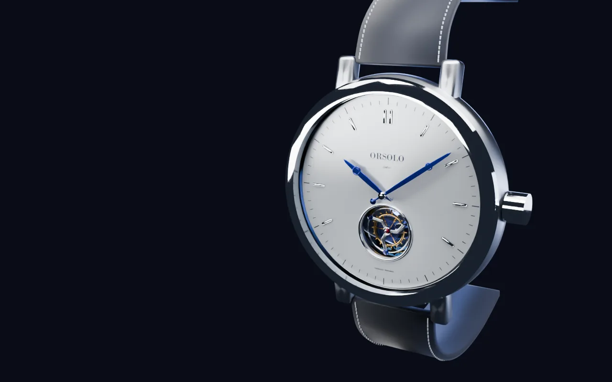

Sapphire, both sides
A domed crystal with anti-reflective coating on the inside face only, so the dial reads as if nothing sits above it.
Gravité T1Tourbillon volant, 41 mm
Orsolo

Gravité T1. A one-minute flying tourbillon, assembled by one watchmaker.
A domed crystal with anti-reflective coating on the inside face only, so the dial reads as if nothing sits above it.
Steel heated over an open flame until it turns this exact blue at around 290 °C. The colour is the finish and the protection.
Grand feu enamel, fired eleven times. The opening at six o'clock exists for one reason: to show the cage turning.
Every edge is filed to a 45° angle and polished until it throws a single line of light. Including the edges no one will see.
Four wheels carry energy from barrel to escapement. Their teeth are cut, then polished one flank at a time.
A single barrel holds three days of power. Wind it on Friday evening and it is still running on Monday.
Forty-one millimetres, eleven point four thick, with an open caseback so the movement keeps working in plain view.
A still balance drifts as gravity pulls on it. In 1801 Breguet set the whole escapement turning, so the error averages out.
0° through this rotation, live
62h
Plates are milled from German silver, then left to rest a week so the metal settles before it is touched again.
118h
The longest step. Files, then wood sticks with diamond paste, then gentian wood for the final shine.
41h
Steel parts are rubbed flat on tin until they look black from one angle and white from another.
87h
Two hundred and nine parts, fitted under a loupe. Anything that marks is taken back and refinished.
32h
Tested in six positions and three temperatures until the rate holds within two seconds a day.
Drag the crown, or use the arrow keys. The balance swings wider as the mainspring tightens.
18h power reserve, of 72
Three grand feu enamels, fired in the same kiln. Turn the lights out to see the lume.
Each one wound, regulated and signed off by the hands that built it.